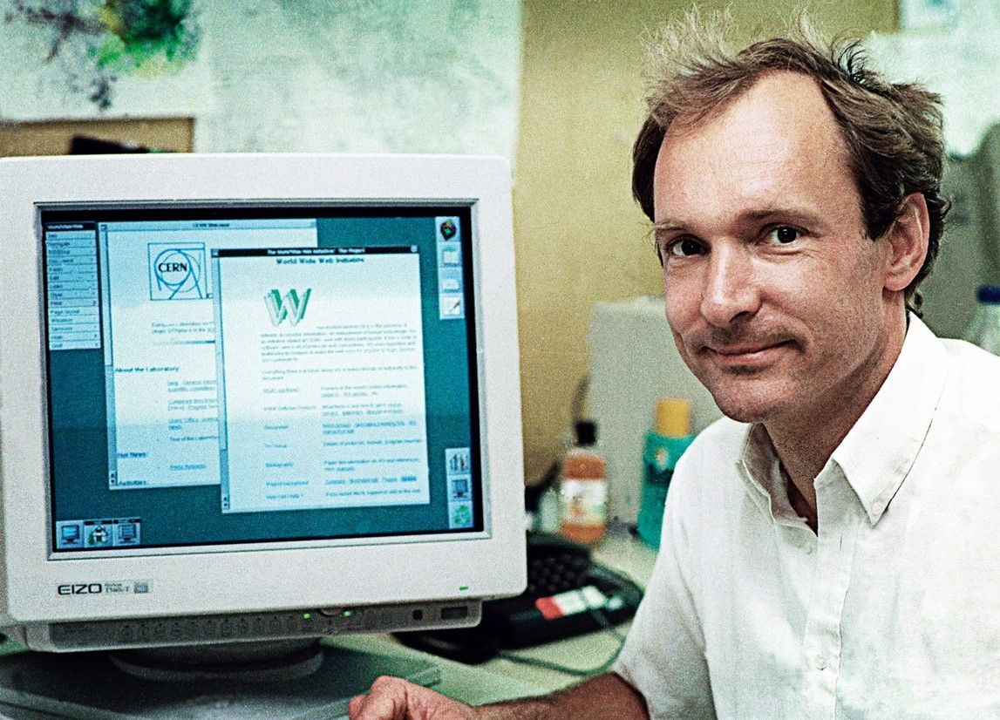

Timothy Berners-Lee

Sobre ele:
Filho de pais matemáticos e cientistas da computação, Timothy John Berners-Lee, é um homem nascido em Londres na Inglaterra em 8 de junho de 1955. Ele é um físico britânico, cientista da computação e professor do MIT (Instituto de Tecnologia de Massachusetts, em inglês). Tim frequentou o The Queen's College, em Oxford, entre 1973 e 1976, onde obteve um diploma em física.
Após concluir sua graduação em Física na Universidade de Oxford, em 1976, tornou-se também engenheiro de software. Em seguida, durante dois anos, Berners-Lee projetou software de computador na Plessey Telecommunications Ltd., situada em Poole, na Inglaterra. Ocupou ainda, posteriormente, diversos cargos no ramo da indústria de computadores, compreendendo um período de junho a dezembro de 1980.
Tim é também o co-fundador e CTO (diretor de tecnologia, do inglês Chief Technology Officer) da Inrupt.com. Essa empresa de tecnologia opera, promove e ajuda a desenvolver a plataforma Solid de código aberto. Esta, por sua vez, fornece às pessoas o controle sobre seus dados.
Berners-Lee foi decisivo no processo de criação da Internet como uma ferramenta eficiente de troca de informações, especialmente entre cientistas.
Em 2004, aceitou uma cadeira de Ciência da Computação da Faculdade de Eletrônica e Ciências da Computação da Universidade de Southampton, na Inglaterra, para trabalhar no projeto Web semântica. Em 2009, foi anunciado que o físico trabalharia com o governo britânico para ajudar a tornar os dados mais abertos e acessíveis na Web.
Ele é uma figura central no processo de desenvolvimento da Internet, conhecido como o “pai da Internet” por fazer a primeira comunicação bem sucedida entre cliente e servidor via HTTP em 1988 (o cientista inglês foi o primeiro a usar a rede de computadores via o HTTP que baseia a comunicação via Internet até hoje).
Criações:
Em 1980 enquanto atuava como contratante independente do CERN (Organização Europeia para a Pesquisa Nuclear) propôs um projeto baseado no conceito de hipertexto para facilitar a partilha e atualização de informações entre os pesquisadores.
Em 1994, já atuando no Massachusetts Institute of Technology, nos Estados Unidos, Berners-Lee fundou o W3C (World Wide Web Consortium), uma comunidade internacional que tem como objetivo garantir que a rede se mantenha e se desenvolva de forma livre. Até hoje, ele continua a dirigir a entidade.
WWW é a sigla para World Wide Web, uma rede mundial de computadores interligados.
Prêmios:
Em 2001, tornou-se membro da Royal Society. Ao longo de sua vida, recebeu diversos prêmios internacionais, incluindo o Prêmio Japão, o Prêmio Fundação Prince of Asturias, o Prêmio Millennium Technology e o Prêmio Die Quadriga da Alemanha. Em 2004 ele foi condecorado pela Rainha Elizabeth. Em 2009, Lee foi eleito associado estrangeiro da Academia Nacional de Ciências.
Em 4 de abril de 2017, Tim recebeu o Prêmio ACM A.M. Turing por inventar a World Wide Web, o primeiro navegador da Web, e os protocolos e algoritmos fundamentais que permitem a expansão da Web. O Prêmio Turing, chamado de “Prêmio Nobel da Computação”, é considerado um dos mais prestigiados prêmios em Ciência da Computação, sendo concedido anualmente pela Associação para Maquinaria da Computação